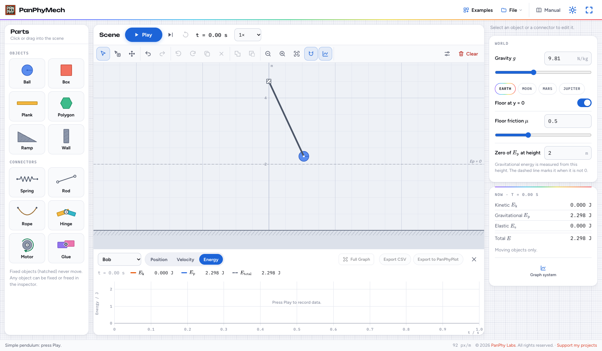
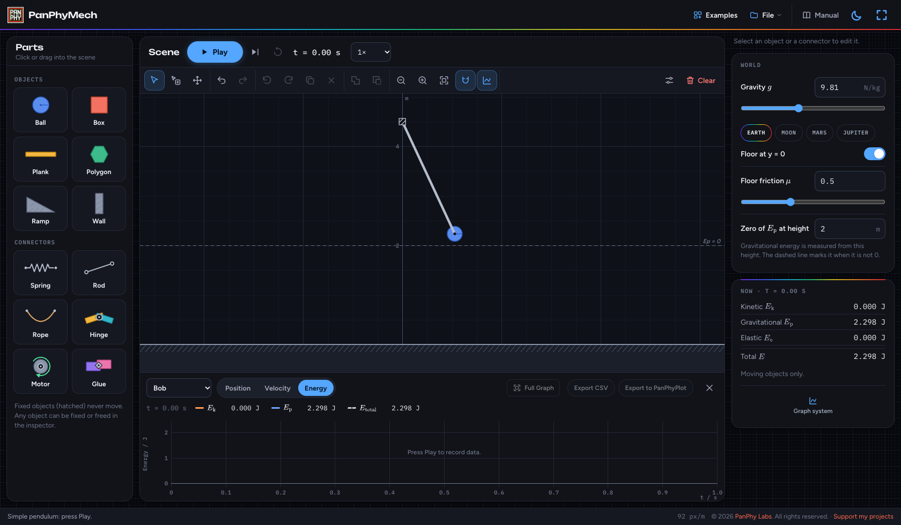
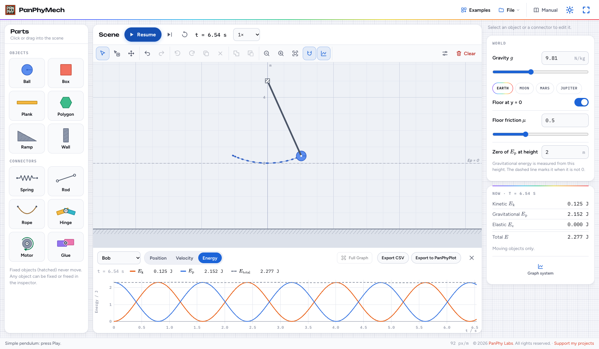
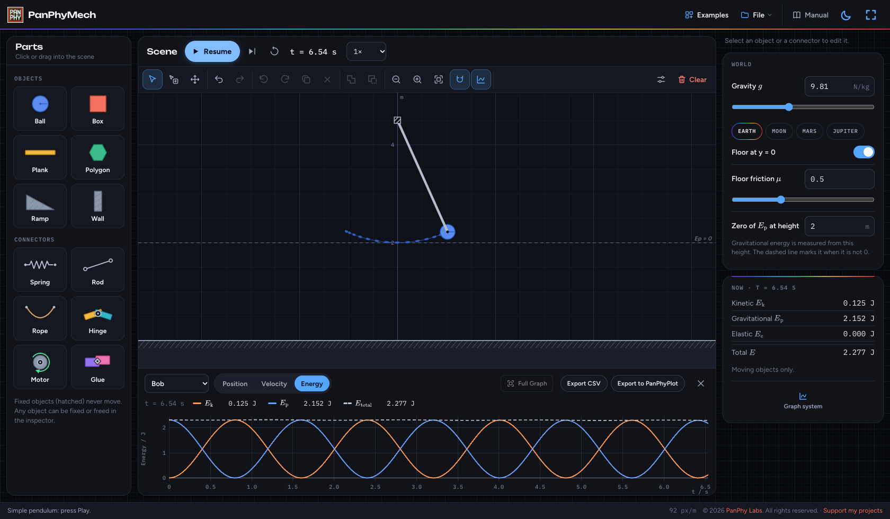
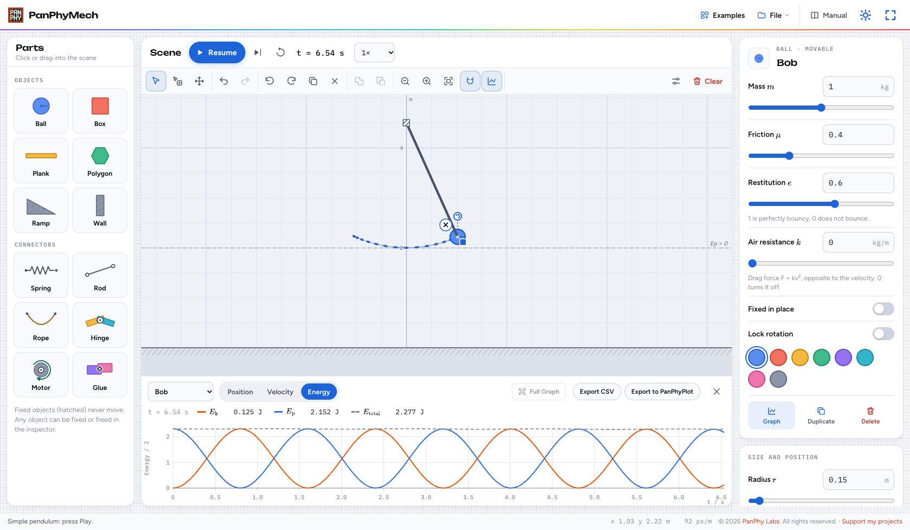
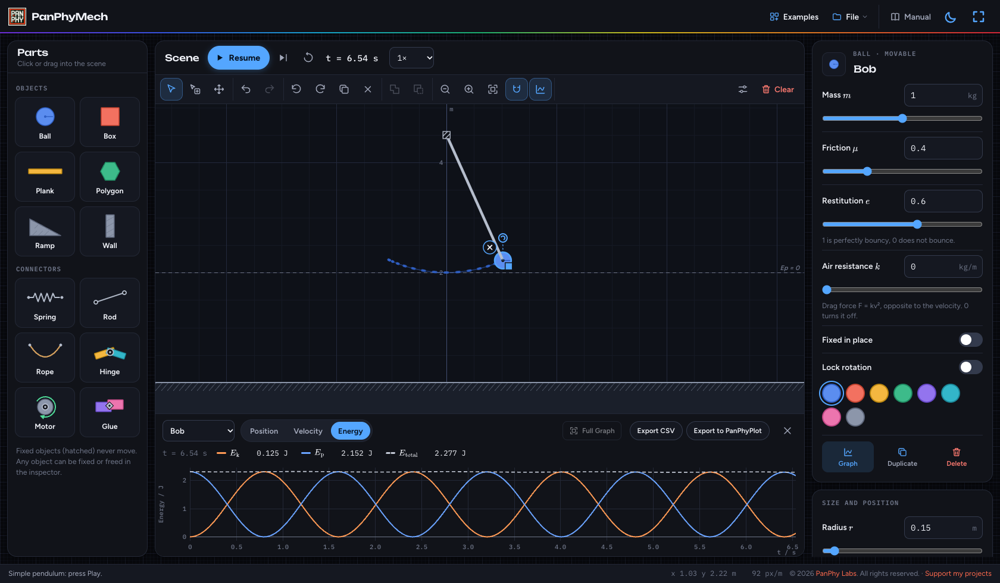
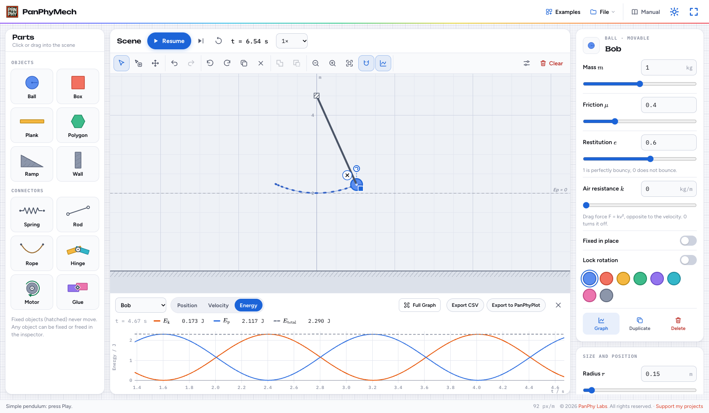
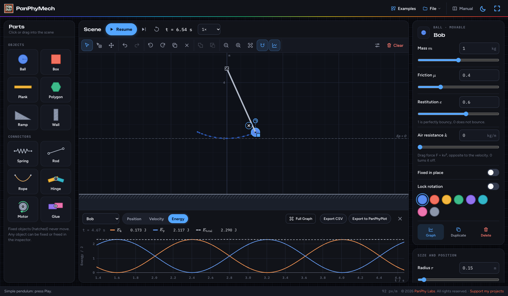
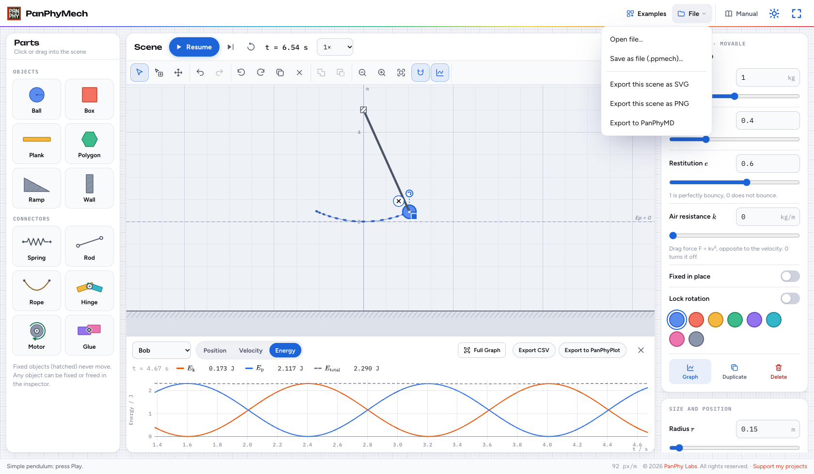
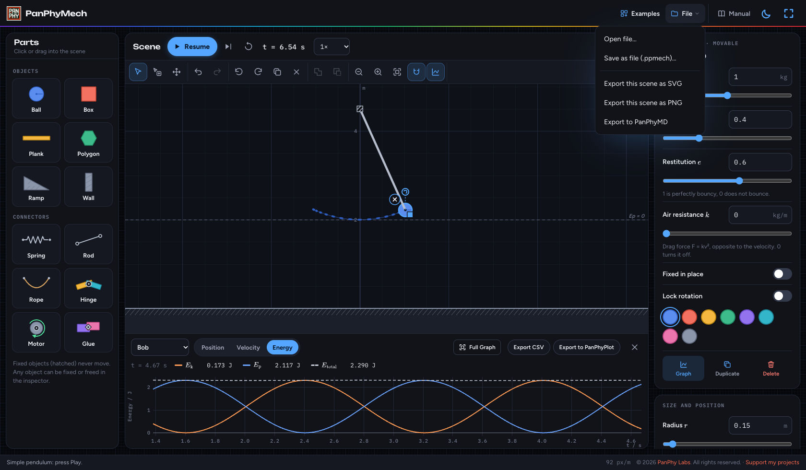

PanPhyMech · User guide
Build an experiment, then measure its motion
Start with a pendulum, watch its energy change, then explore your own objects, connectors and graphs.
Your first mechanics experiment
Follow these five steps in order. Screenshots match your theme; select one to enlarge it.
Step 1 of 5
Open an example
- Open PanPhyMech in a new tab. Choose Examples → Simple pendulum. Opening an example replaces your scene; Undo can restore it.
- Find Parts on the left, the Scene in the middle, the graph below and the Inspector on the right. On a narrow screen, use the panel buttons in the Scene heading to open Parts or Inspector.
- The example starts with a 1 kg bob on a 2.5 m rod. Leave its settings unchanged for this walkthrough.
A bob hangs from a background anchor, released at an angle. The graph tracks Bob with Energy selected, ready to record.

Enlarge screenshot ↗
Enlarge screenshot ↗Step 2 of 5
Run, pause and reset
- Press Play or Space. Let the pendulum swing for several seconds, then press Pause.
- Use the speed menu beside the time to watch in slow motion. The time shown and graph times are simulated seconds.
- The step button advances 1/60 s. Reset returns to the starting setup and clears the recording; save that for after you export.
The bob swings while kinetic and gravitational energy trade places. Their total stays approximately constant; Pause holds the scene and keeps the graph.

Enlarge screenshot ↗
Enlarge screenshot ↗Step 3 of 5
Inspect and change settings
- With the scene paused, click the bob. The Inspector shows its properties and current readings. Right-click it, or touch and hold, for quick settings.
- Use the numeric fields for precise mass, friction, bounciness and air resistance. Reset before testing a different starting position or velocity.
- Click empty space to show World: gravity, floor, floor friction and the reference height for gravitational energy.
The bob is highlighted and its settings appear in the Inspector. The example’s gravitational-energy reference is 2 m, the height of the bob at its lowest point.

Enlarge screenshot ↗
Enlarge screenshot ↗Step 4 of 5
Read and export a graph
- Use Graph of to choose Bob, a spring when present, or Whole system. For Bob, switch between Position, Velocity and Energy.
- Hover over the graph to read the nearest sample. Drag across the graph to zoom into a time interval. Full Graph restores the complete recording.
- Use Export CSV for the chosen object’s recorded quantities, or Export to PanPhyPlot to analyze them. Both use the displayed time interval and retain the original sample times.
The chosen quantity is plotted against time. A selected time interval narrows both the graph view and exported data.

Enlarge screenshot ↗
Enlarge screenshot ↗Step 5 of 5
Save or export the scene
- Your setup autosaves in this browser. Choose File → Save as file (.ppmech)… for a portable copy.
- Use Open file… to load a saved setup. Save the current work first if you want to keep a separate copy.
- Export the current scene view as SVG or PNG, or choose Export to PanPhyMD to put an embedded scene image in notes.
A .ppmech file preserves an editable setup. Graph recordings are separate: export them as CSV before resetting or replacing the scene.

Enlarge screenshot ↗
Enlarge screenshot ↗Reference
Build your own experiments, understand the readings and keep your work.
Build and edit
- Click a part in Parts, then click the scene, or drag it straight in. Hold Shift to place several. The library includes balls, boxes, planks, polygons, ramps and walls.
- Drag an object to move it. The round handle rotates it; the square handle resizes it. Use the Inspector for precise size, position and starting velocity. Fixed objects are hatched and do not move.
- Shift-click or use Select several to select multiple objects. Duplicate copies the selection. Merge combines selected objects into one rigid shape; Subtract cuts the last selected object out of the others. These edits can be undone.
- Hinged and glued objects move together while editing. Drag empty space to pan; scroll, pinch or use the zoom buttons to zoom. Fit frames current positions, so leave room for motion. Snap aligns placement to the grid and rotation to 15° angles.
Connect objects
- Spring, rod, rope: click the first endpoint, then the second. When dragging from Parts, drop the first end and click the second. An endpoint on empty space is fixed to the background; endpoints snap to nearby object centers.
- Hinge, motor, glue: place at the overlap between two objects. With one object, the joint attaches it to the background. A motor turns its first attached object relative to the second; set its speed, direction and maximum torque in the Inspector.
- A spring’s initial natural length matches its placement; change its natural length, stiffness or damping in the Inspector. A rod holds a fixed distance; a rope limits the maximum distance.
- Rods and ropes are ideal and massless until Solid is enabled. Solid rods are thin bars; solid ropes are chains that can drape around objects. Their mass contributes to system energy. Extreme mass ratios can make a solid rope unstable.
- Drag a connector by its line, or select it and drag an endpoint handle. Each end attaches to the object under it when released. Drag hinges, motors and glue to reposition them. Right-click or touch and hold for quick settings. Esc or right-click cancels placement.
Editing after a run
- Pause keeps the current motion and recording. Play resumes. While running, drag an object to pull it with a force.
- Moving, resizing, adding or deleting after time has run makes the current state the new starting setup and starts a fresh recording. Undo can return to the previous setup.
- Parameter changes such as mass, friction, restitution, drag, gravity and spring or motor settings apply immediately. Reset first when you want to compare runs from the same initial conditions.
- Reset rebuilds the starting setup at time zero and clears the graph. A saved scene is an editable setup, not a replay or a graph recording.
Graphs, display and energy
- The recorder samples moving objects and springs throughout a run, so you can change the tracked object afterward. Whole system offers energy; springs offer extension, force and elastic energy. Fixed objects are not graph targets.
- Click a legend entry to hide or show that curve. Drag the separator above the graph to resize it. The graph toolbar button shows it again after closing it.
- With the graph focused, +/− zoom, arrow keys pan and Esc restores Full Graph. The scene canvas has its own shortcuts.
- Display settings control velocity arrows, trails, labels and the grid. Scene exports preserve the current view, theme and visible display options, without editing handles.
- Whole-system energy includes moving objects and solid connectors. The bob’s energy is not the whole system in a more complex scene. For objects attached to springs, the object energy graph includes the attached spring energy.
Physics model and limits
- All quantities use SI units. The simulation uses Planck.js (Box2D) rigid-body mechanics, with steps of 1/240 s or smaller for stiff springs; solid connectors use smaller steps too.
- Springs follow Hooke’s law with optional linear damping. Air resistance acts opposite motion and increases with the square of speed. Friction combines the two surface coefficients using their geometric mean; if either is zero, the contact is frictionless.
- Bounciness uses the larger restitution of the two surfaces. Very slow collisions are inelastic to keep resting contacts quiet. Contact gaps and small energy changes at impacts are normal numerical effects.
- Gravitational energy is measured from the height set in World, which defaults to the floor at 0 m. Some examples choose another reference; negative gravitational energy below that height is valid.
- Merged or cut shapes can catch at seams, and very thin walls can miss fast objects. This is an educational model; reduce extreme speeds, stiffnesses or mass ratios if a setup becomes unstable.
Files and browser storage
- Autosave belongs to this browser and device. Clearing site data can remove it. Keep .ppmech backups for work you want to keep or share.
- Save uses a filename/location picker where supported and a download elsewhere. Scene SVG/PNG exports are images; open the .ppmech file to continue editing.
- PanPhyMech and this manual work offline after the homepage shows the app as Offline ready. Visit online first to download the required files.
Keyboard
| Keys | Action |
|---|---|
| Space | Play / pause (outside buttons and entry fields) |
| . | Advance 1/60 s |
| V / H | Select / pan tool |
| R / Shift+R | Rotate 15° clockwise / counterclockwise |
| G | Toggle snap |
| Del / Backspace | Delete selection |
| Ctrl+D | Duplicate selection |
| Ctrl+Z / Ctrl+Shift+Z | Undo / redo (Command also works on Mac) |
| Arrow keys / Shift+arrows | Nudge selected object 0.01 m / 0.1 m with scene focused |
| + / − / 0 | Zoom in / out / fit scene |
| Esc / right-click | Cancel placement (Esc also clears selection) |